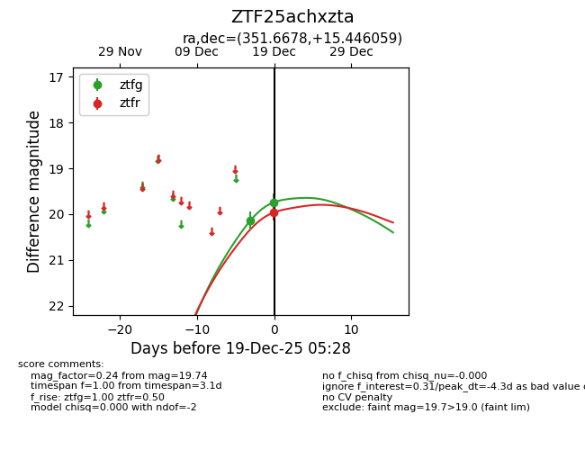
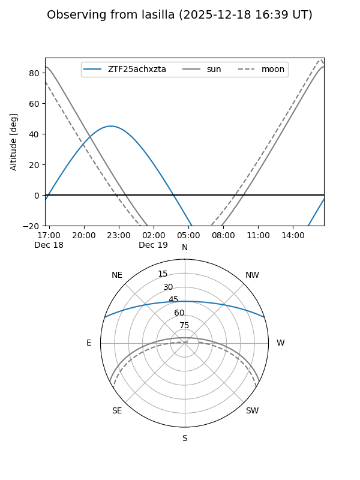
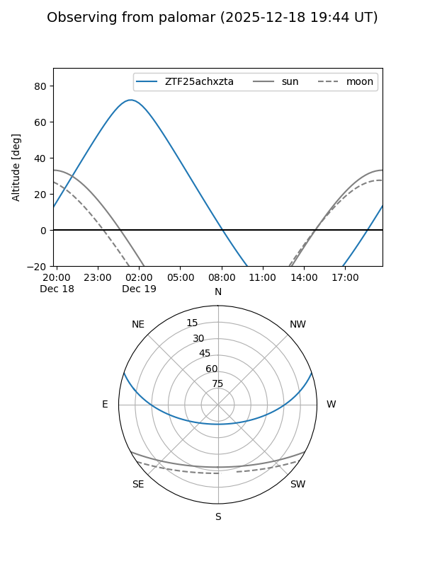

ZTF25achxzta
Target ZTF25achxzta at 2025-12-18 10:45
Aliases and brokers:
FINK: fink-portal.org/ZTF25achxzta
Lasair: lasair-ztf.lsst.ac.uk/objects/ZTF25achxzta
ALeRCE: alerce.online/object/ZTF25achxzta
alt names
ZTF25achxzta (ztf,fink_ztf)
Coordinates:
equatorial (ra, dec) = 351.6678,+15.44606
equatorial (HMS+DMS) = 23:26:40.28,+15:26:45.81
galactic (l, b) = (94.6214,-42.71797)
Photometry
last ztfg=20.14
1 ztfg detections
Lightcurve

Visibility


Additional plots